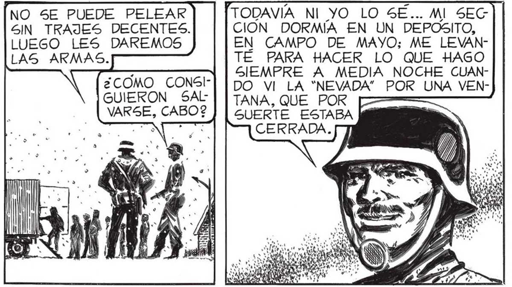
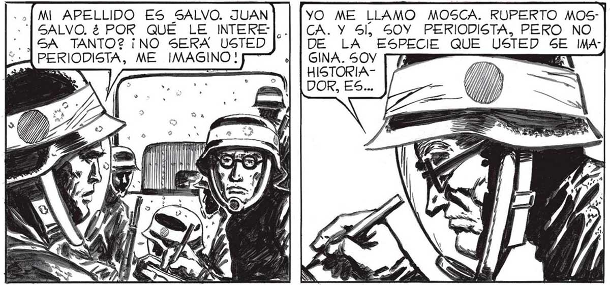

84 ERA OTRA cosa [EL GRUPO_DE MIS MILICIANOS NO PODÍA SER MAS : HETEROGÉNEO. QUE UN APACIBLE Y PEQUEÑO FABRICANTE DE ACUMULADORES QUE GUS TABA DE JUGAR AL TRUCO CON LOS A- | MIGOS. AHORA ERA |: . CABO DE MILICIAS, Y DEBÍA DIRIGIR A MIS HOMBRES EN EL DESESPERADO INTENTO DE DESALOJAR DE BUENOS [B AIRES AL DESCO- POW NOCIDO PERO INCREIBLEMENTE PODEROSO INVASOR. AFUERA ESTABA UN IMAGINARIA, VA | MUERTO. IBA A SALIR CUANDO VI CAER UNA PALOMA: ME DI CUENTA DE QUE EN EL AIRE HABIA ALGO. DI LA ALARMA Y CERRAMOS TOMIENTRAS ME LOS PRESENTABA UNO POK UNO: LA MAYORÍA TENÍA TRAJES... "..UNO DE LOS SOLDADOS ES ESTUDIANTE |PRONTO ME TOCO ... IMPOSIBLES QUE APENAS SI LES PERMITÍAN LOS MOVIMIENTOS MAS SIMPLES. PERO ALLÍ ESTABA EL CABO AMAYA, TODO EFICIENCIA: | EN UNO DE LOS ÍÍ, CAMIONES HA| BÍA TRAJES BIEN ] HECHOS; LO HABIAN TRANSFORMADO EN CAMARA AISLADA DONDE ERA POSIBLE CAMBIARSE. NO S5E PUEDE PELEAR SIN TRAJES DECENTES. LUEGO LES DAREMOS BIEN. PARECE QUE TENDRE-|. * LAS ARMAS. ¿COMO CONSIGUIERON SAL VARSE, CABO? LOS EXAMINÉ DE INGENIERÍA, ¡GRACIAS A ÉL ESTAMOS VIVOS! Y GRACIAS TAMBIÉN A QUE EN EL DEPOSITO HABÍA DE TODO. CONSEGUIMOS COMUNICARNOS CON LUCES CON LAS POCAS UNIDADES QUE SE Y SALVARON, Y AQUÍ ESTAMOS. EL TURNO DE CAMBIARME. NO SIN CIERTO PESAR ME QUITÉ EL TRAJE AISLANTE QUE FABRICAMOS Y CON FAVALLI Y ELENA Y ME ENFUNDE EN EL PRACTICO EQUIPO DEL EJERCITO. UN MOMENTO MAS Y YA BIEN ARMADA Y EQUIPADA LA COLUMNA lA SE PUSO EN MARCHA. [TODAVÍA NI YO LO SE... MI SEC CION DORMÍA EN UN DEPOSITO, EN CAMPO DE MAYO; ME LEVANTÉ PARA HACER LO QUE HAGO SIEMPRE A MEDIA NOCHE CUANDO VI LA “NEVADA” POR UNA VENSUERTE ESTABA CERRADA. DISCULPE CABO... ¿PODRIA DECIRME 5U NOMBRE. ? | MI APELLIDO ES SALVO. JUAN +" SALVO. ¿ POR QUE LE INTERE: "¡JSA TANTO? ¡NO SERA USTED YO ME LLAMO MOSCA. RUPERTO MOS | CA. Y 5l, 50Y PERIODISTA, PERO NO DE LA ESPECIE QUE USTED SE IMA ..DECIR ALGO ASÍ COMO UN SUPERPERIODISTA... QUIERO RECOGER HASTA LOS MENORES DETALLES DE LO QUE PASE EN EL ATAQUE...¿SE DA CUENTA USTED, SEÑOR, SORPRENDÍ LA MIRADA QUE FA GINA. 50Y p : | QUE ESTAMOS VIVIENDO HORAS HISTORICAS ? ¡LAS GE- | VALLI LE DIRIHISTORIA" (/ y NERACIONES FUTURAS NO S5E CANSARAN DE ESTU-. | SO. MIRADA DOR, ES... | 1) | DIAR CUANTO HAGAMOS: ESTAMOS VIVIENDO ALGO Así | TRISTE, YA CANPP >> COMO UNAS NUEVAS “INVASIONES INGLESAS”!¡ LOS PROXI- SADA. MOSCA MOS COMBATES SERÁN RECORDADOS JUNTO CON LOS J HABLABA DE ] o? dd 2 HISTORIA, TRAAAA > it TABA DE MIRAR a fi TN SAR te LO QUE NOS Oy l e | Be] CURRÍA CON LOS SS LAN ES88 OJOS DE LAS ] 38] GENERACIONES FUTURAS. PERO... ¿HABRÍA GENERACIONES FUTURAS?

